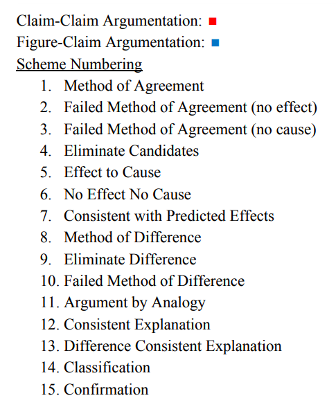
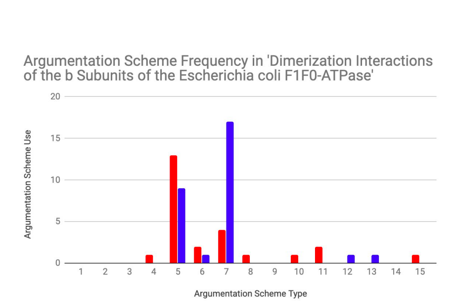
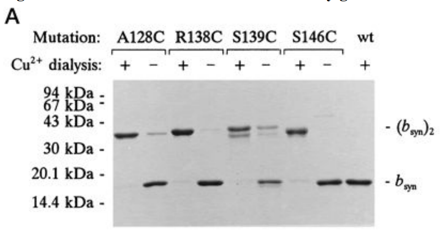
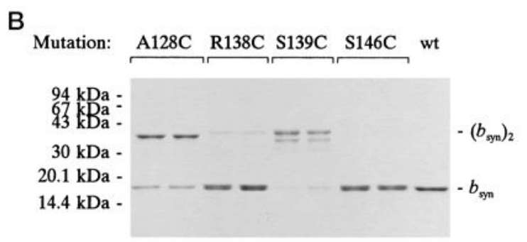
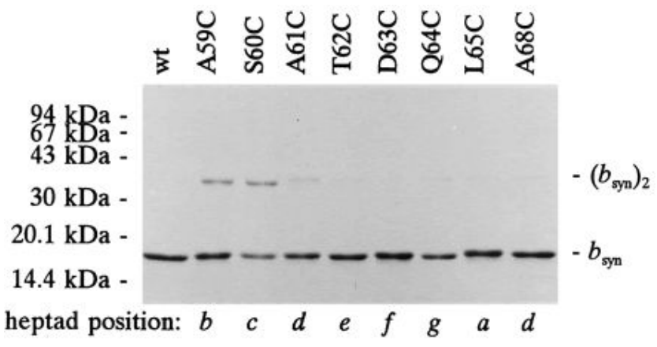
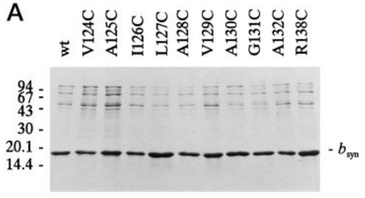
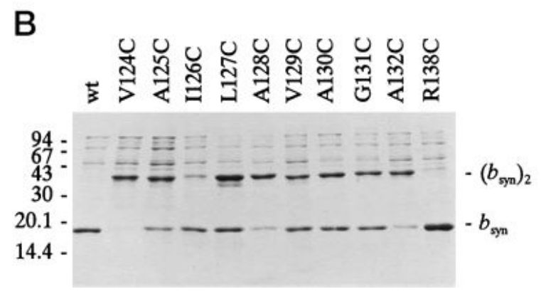
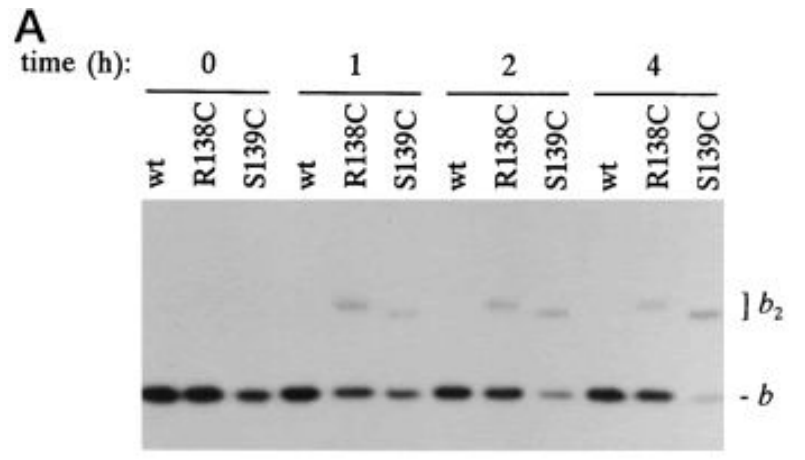
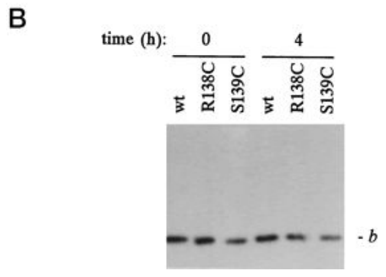

Premise (3A): Cysteines at positions 124, 128, 132, and 139 showed strong tendencies to form
disulfides with their mates in the dimer
Premise: disulfide binding following 4-residue periodicity is indicative of an a-helical protein
structure.
Conclusion (3B): a parallel α-helical interaction [is suggested] between the subunits in this
region
Argumentation Type: Effect to Cause (5)
Frequency of Argumentation Schemes
 Figure 2: Disulfide bond formation induced by glutathione.
 Background Information
- Glutathione facilitates the formation of disulfide bonds between cysteines given appropriate proteine proximity and configuration
- Proteins with cysteine mutations at residues 128, 138, 139 and 146 were used (numbers refer to the position of the amino acid within the protein chain if the first amino acid in the chain is ‘1’)
- There is highest dimerization for the b subunit proteins with mutations at positions 128 and 139, as shown by the band thickness in the western blot. This indicates that 128 and 128’ and 139 and 139’ are close together within the quaternary structure (binding can only occur with proximity)
- The low dimerization for 139 and 146 suggest that these positions lack orientation or proximity for binding
- The data displayed in Fig. 2A was taken following equilibrium and therefore the differences in dimerization are not the result of varied accessibility to glutathione.
General: If dimerization of a bsyn dimer from a monomer with known cysteine position is shown by a dark band then the cystines at those positions are within necessary proximity or orientation for disulfide bonding because dimerization is dependant on disulfide bonding.
Specific Findings:
- If the bsyn monomers with cysteine mutations at positions 128 and 139 showed more dimerization then the cystines at those positions are within necessary proximity or orientation for disulfide bonding because dimerization is dependant on disulfide bonding.
- If the bsyn monomers with cysteine mutations at positions 138 and 146 did not show dimerization then the cystines at those positions are not within necessary proximity or necessary orientation for disulfide bonding because dimerization is dependant on disulfide bonding.
Figure 3: Disulfide bond formation in the heptad repeat region
Background Information
- A heptad repeat region is a 7 amino acid sequence within a protein chain that repeats. The C indicates a charged residue.
- In a coiled coiled structure (such as an a-helix) the residues exhibiting the highest bonding are expected to be within a region which perturbs the coiled structure the least
- A similar experiment as was used for Fig. 2
- bsyn protein monomers with cysteine mutations at positions 59, 60, 61, 62, 63, 64, 65, 68 (with 65 as the start of the heptad (a))
General: If there is highest dimerization for proteins with cysteine mutations at positions which perturb residue orientation and secondary structure the least (61 and 68) then the bsyn protein follows a coiled-coil structure because disulfide bond formation between coiled structures must occur in regions which least perturb protein structure and dimerization relies on disulfide bond formation.
Specific Findings: If the highest dimerization occurs in bsyn monomers with cysteine mutations at residues 59 (position b) and 60 (position c) then the bsyn monomer is not a coiled coil structure because residues 59 and 60 are not in positions whose binding would least perturb residue orientation and protein secondary structure.
Figure 4: Mixed disulfide formation in the heptad repeat region

Background Information
- For two b subunit to bind they must have the correct spatial geometry/orientation (think of two strips of velcro; they are not going to stick together if they are facing outside-in or if they are sitting 5 feet apart)
- Dimerization does not always involve the same two subunit residues binding together (eg. residue 60 of one b subunit could bind with residue 65’ of the other b subunit)
- Residues of one subunit are notated as n while residues on the other subunit are notates as n’ (eg. 60 binds with 60’)
- Mixing pure solutions of b subunit proteins with only 1 cysteine mutation each then looking for which dimerize the most will show which residues are binding together during dimerization
- In most cases the level of dimerization for mixed mutation protein solutions (eg. residue 63 cysteine containing subunits + residue 65 cysteine containing subunits) was not higher than the single mutation solutions (as indicated by western blot band density)
- The highest level of dimerization occured in the mixtures 60+65 and 61+65
General: If dimerization of two bsyn subunits with known cysteine positions is shown by a dark band then the cystines at those positions have the correct spatial geometry for disulfide bonding because dimerization is dependant on disulfide bonding.
Note: correct spatial geometry refers to subunit proximity and orientation
Specific Findings:
- If dimerization of two bsyn subunits with cysteines at residues S60C and L65C is shown by a dark band then the cystines at those positions have the correct spatial geometry for disulfide bonding because dimerization is dependant on disulfide bonding.
-
If dimerization of two bsyn
subunits with cysteines at residues A61C and L65C is shown
by a dark band then the cystines at those positions have the correct spatial geometry for
disulfide bonding because dimerization is dependant on disulfide bonding.
Figure 5: Disulfide bond formation in the VAILAVA region.
 Background Information
- Amino acids are given one letter codes to make sequencing and analysis more simple (eg. the amino acid cysteine has the one letter code ‘C’)
- The VAILAVA region is a section of the b subunit protein chain between positions 124 and 132 consisting of amino acids whose one letter codes in sequence spell out ‘VAILAVA’
- Protein chains will initially fold into a secondary structure which can be an a-helix coil or a b-pleated sheet. The alpha helix coil looks similar to a telephone cord or what you may have seen cartoon DNA drawn as. Because of the coiled structure some amino acids will align vertically, usually every 4 amino acids in the chain (imagine painting a single strait red stripe down the side of a wound slinky then straightening the slinky out into one long line. Even though the red stripe was continuous and strait when the slinky was wound, it will appear as small bits of red with equal spaces between them when the slinky is straightened.)
- Immediately following Cu2+ dialysis (time=0) the bsyn subunits are all reduced, and not indimers
- After 2 hours of dialysis the most disulfide bonding occured in b subunits with cysteine mutations at positions 124, 128, and 132 as indicated by the western blot band density
General: If dimerization occurs for b subunits with cysteine mutation positions 4 amino acids apart then the structure of the region is alpha helical because disulfide binding follows 4-residue periodicity in an a-helical protein structure.
Specific Findings: If the highest dimerization occurs for b subunits with cysteine mutation positions 124, 128, and 132 then the structure of the region is alpha helical because disulfide binding follows 4-residue periodicity in an a-helical protein structure.
Figure 6: Disulfide formation in membrane-bound b.
 Background Information
- the experiments run up to figure 6 have used b subunit proteins in isolation. It is possible that the behavior of subunits on their own is not the same as the behavior of subunits within their protein complexes (ei. The ATPase enzyme).
- it is necessary to compare dimerization behavior of isolated subunits and the same subunits in a cellular environment because it isn't guaranteed that the behaviors will be the same.
- The b subunit with the R138C cysteine showed some dimerization after 1h but the level did not increase with time
- The b subunit with the S139C cysteine showed consistent increase in dimerization over the course of the 4 hours
- After reduction the intensity of the S139C band returned to its original level suggesting the antibody used did not recognize the dimer as effectively as the monomer.
- The actual ratio of dimerized S139 b subunits is likely higher than it appears in the western blot.
General: If the dimerization levels are similar in membrane bound b subunits and in non membrane bound b subunits with the same cysteine mutation then the dimerization tendencies of the b subunits observed in solution are representative of the regular cell behavior because the cysteine mutations affect disulfide bonding equally in both contexts.
Note: correct spatial geometry refers to subunit proximity and orientation
Specific Findings:
- If the b subunit with a cysteine mutation at residue R138C showed limited dimerization when membrane bound then the dimerization tendencies of the b subunits observed in solution are representative of the regular cell behavior because isolated b subunits with a cysteine mutation at residue R138C also demonstrated limited dimerization.
- If the b subunit with a cysteine mutation at residue S139C showed consistent dimerization when membrane bound then the dimerization tendencies of the b subunits observed in solution are representative of the regular cell behavior because isolated b subunits with a cysteine mutation at residue S139C also demonstrated consistent dimerization.